The Problem
UC Davis Graduate School of Management had no centralized platform for alumni post-graduation. Alumni lacked access to continued learning, professional networking, and community — and the school had no scalable way to keep them engaged.
How might we create a platform where alumni can access learning content, connect professionally, and stay part of a supportive GSM community?
Research Insights
The research team ran focus groups, interviews, and a quantitative survey. I synthesized their findings into actionable themes and presented them to the PM and stakeholders to align on design direction. Four patterns shaped what we built:
01
Alumni want a single destination for high-quality learning — not scattered resources across platforms.
02
Professional networking is a top priority. Alumni want easier ways to find and connect with each other.
03
Staying competitive matters. Alumni seek credible, time-efficient content tied to real industry trends.
04
Engagement drops when communication feels impersonal or last-minute. Alumni want to feel seen.
Personas
Three core alumni profiles emerged from research, each with different motivations and engagement patterns:
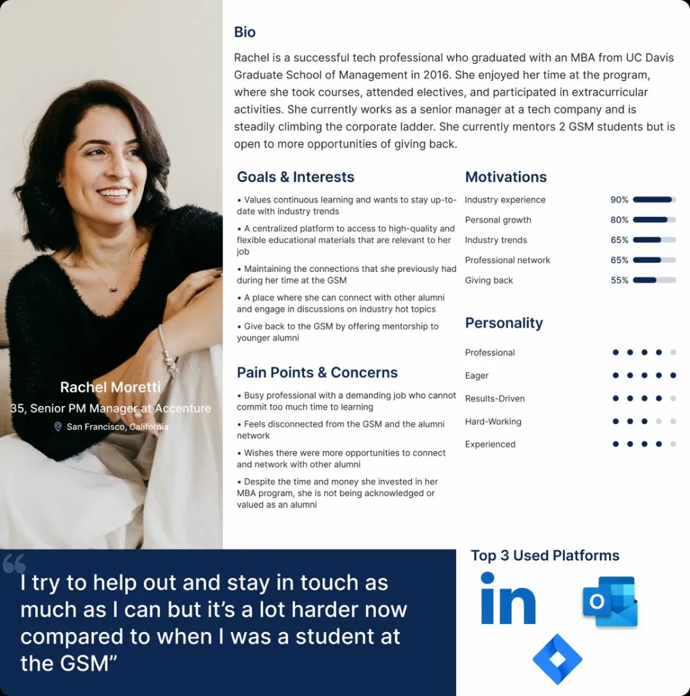
Rachel Moretti
Senior manager. Values giving back, wants to mentor younger alumni.
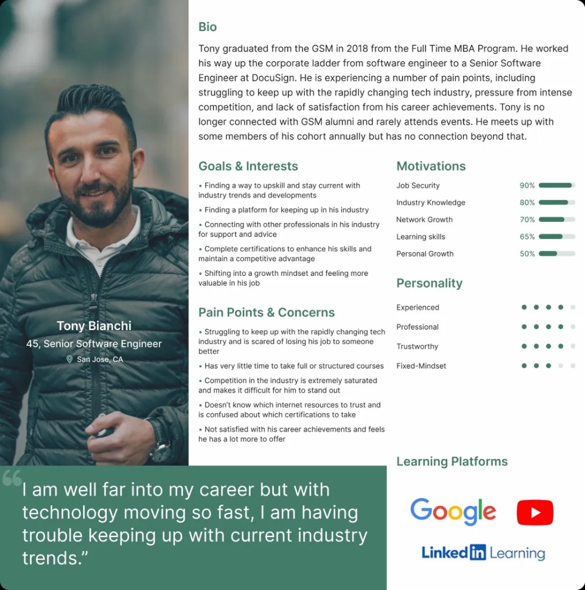
Tony Bianchi
Mid-career engineer. Struggling to stay current, needs efficient upskilling.
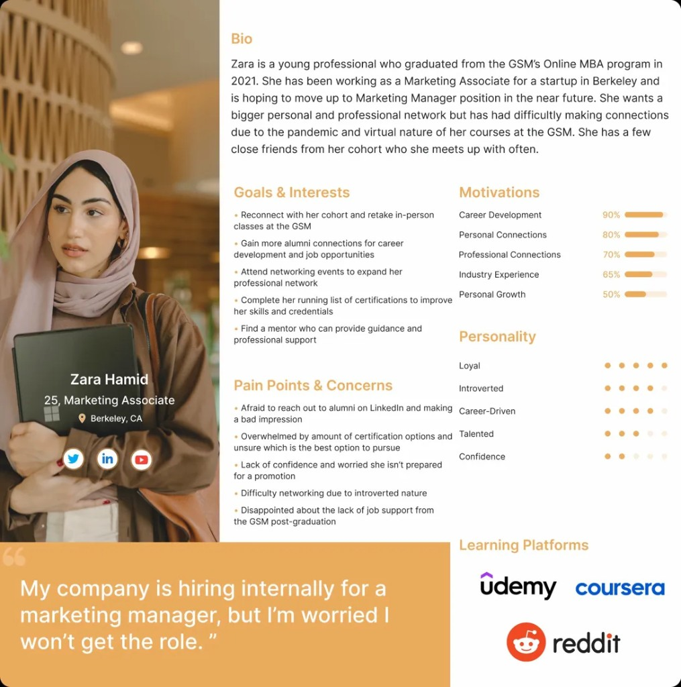
Zara Hamid
Early-career associate. Seeking mentorship and professional connections post-graduation.
Ideation
PMs defined the MVP feature set through stakeholder workshops. I took that as a foundation and mapped each feature to the research themes, then led design direction across three pillars: community, professional growth, and learning. When scope was tight, I advocated for cutting a gamification feature to protect the core experience — a trade-off the team agreed on after reviewing the research priorities together.
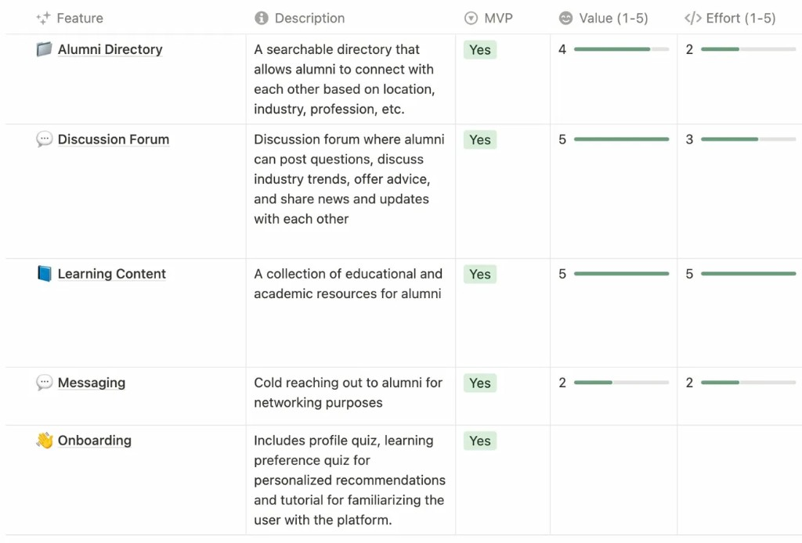
Lo-Fi → Mid-Fi
Lo-fi focused on getting core solutions on screen. At mid-fi, I added branding, copy, and interaction detail to prepare a clickable prototype for alumni feedback sessions. I facilitated two rounds of informal testing with 5 alumni, which surfaced that the onboarding quiz felt too long — so I condensed it from 8 questions to 4 without losing personalization quality.
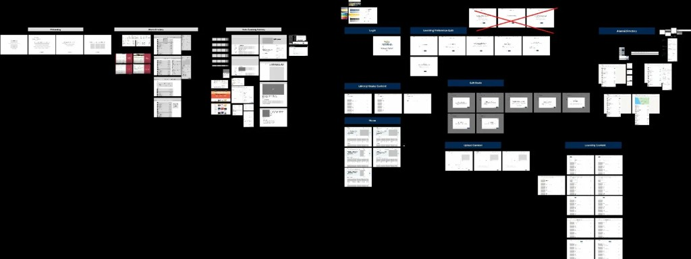
Final Design
Feature 01
Learning Preferences Quiz
A quick onboarding quiz that tailors learning suggestions to each alumni's style and goals.
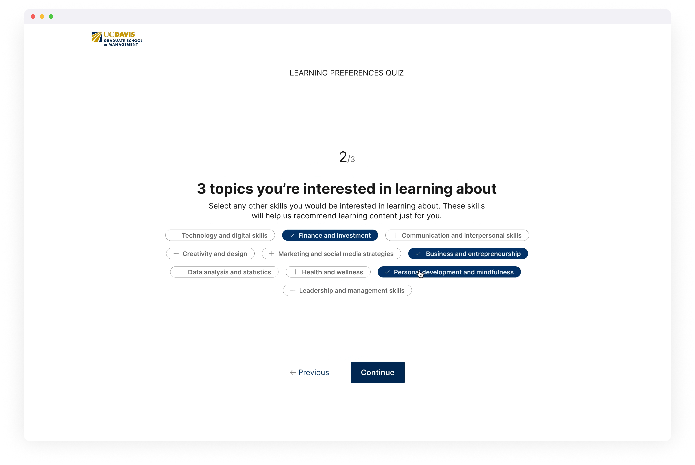
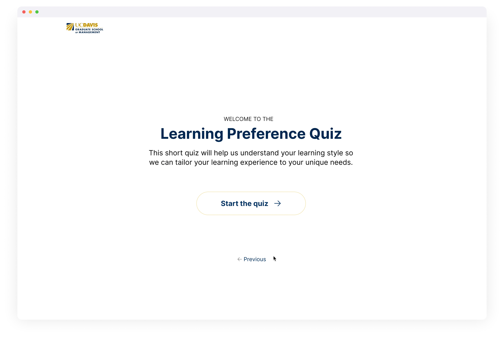
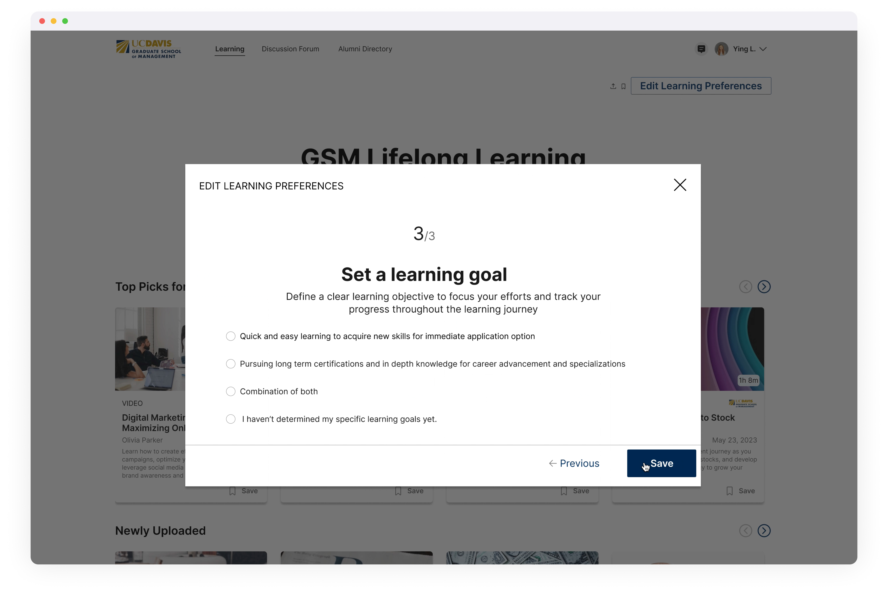
Feature 02
Learning Library
Curated courses, articles, and videos organized around each alumni's preferences and industry.


Feature 03
Post Content
Alumni can share articles, podcasts, or videos back to the community — with an admin approval workflow.
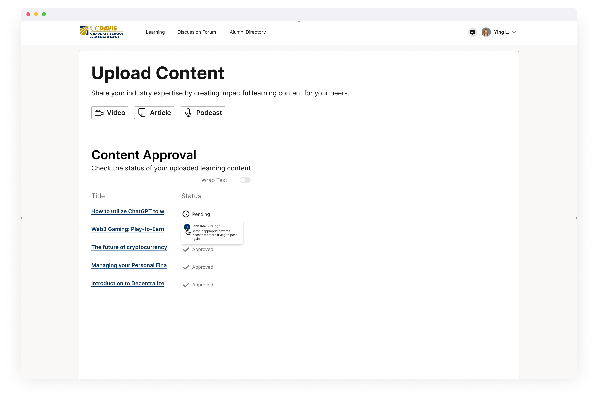
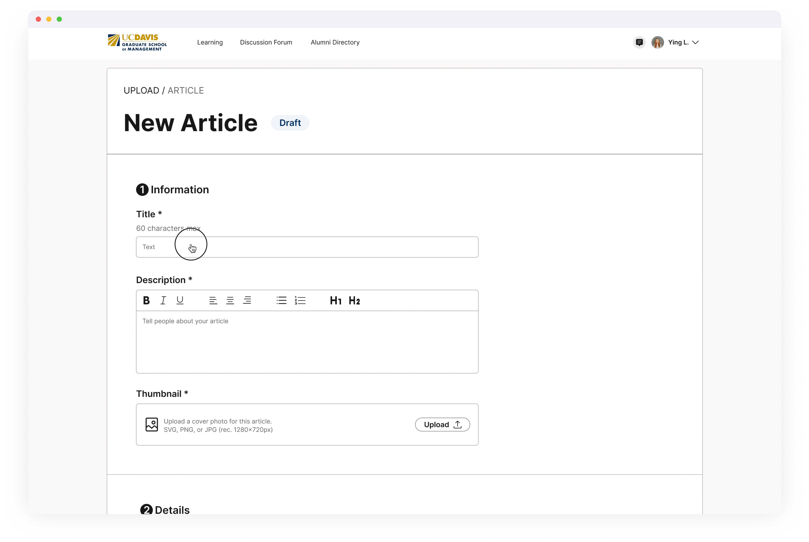
Feature 04
Alumni Network Map
An interactive geomap and directory for finding alumni by location, company, or industry — built for meetups, mentorship, and networking.
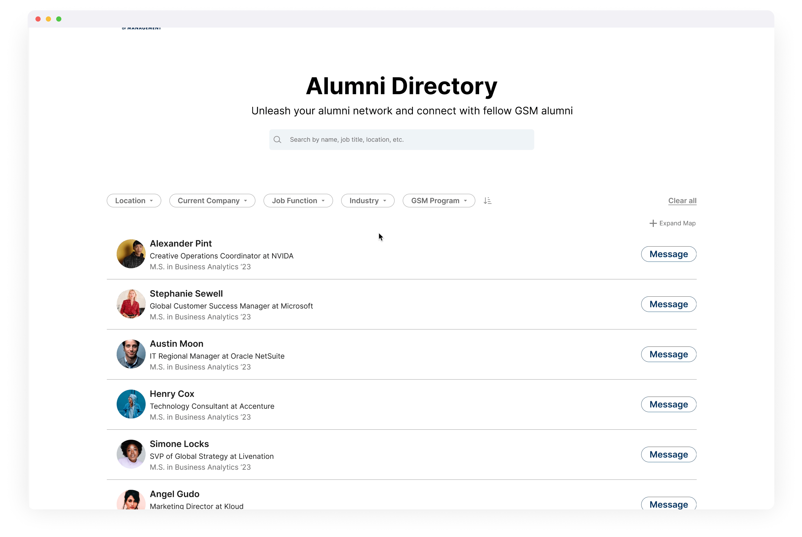
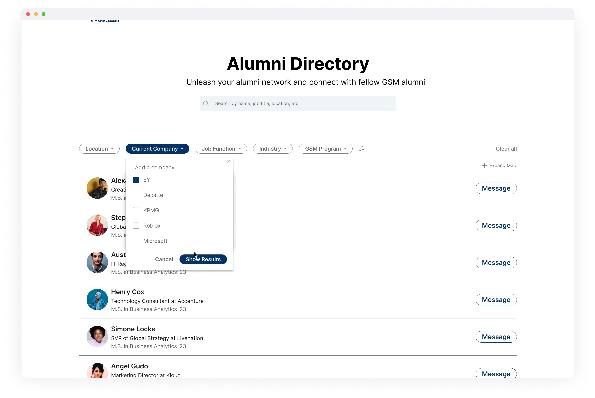


Outcome
The final prototype was presented to the UC Davis GSM stakeholder team and received approval to move into a development scoping phase. If launched, the primary success metric would be alumni monthly active engagement — measured through content interactions, directory searches, and return visits within 30 days of onboarding.
Takeaway
What I learned
Building an advanced filter and interactive map in Figma pushed the tool to its limits — no conditionals, no multi-action triggers. It taught me when to prototype high and when to communicate intent through documentation and spec instead.
Working alongside PMs for the first time showed me how feature scoping, roadmap alignment, and cross-functional rhythm shape what actually ships. I learned to bring data and user feedback to every design review, not just mockups — which made trade-off conversations faster and built trust with stakeholders.